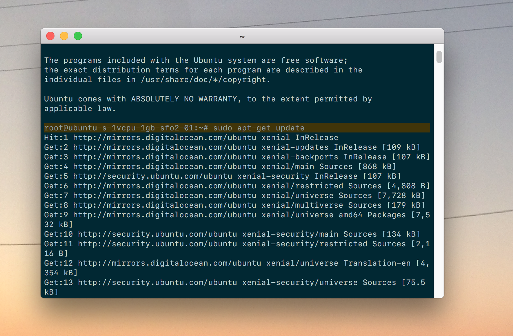
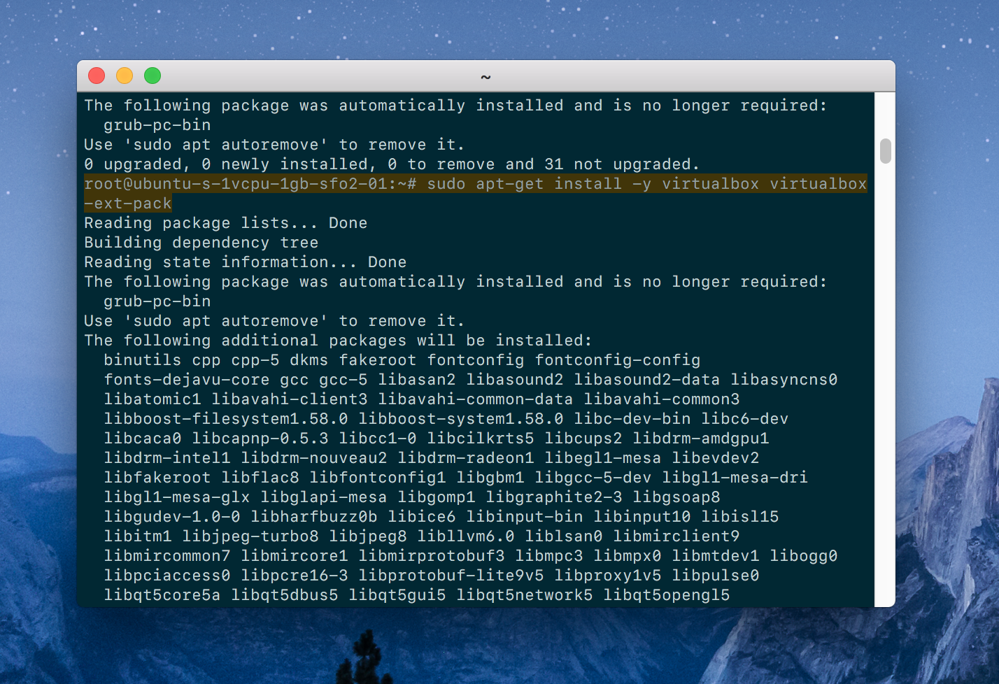
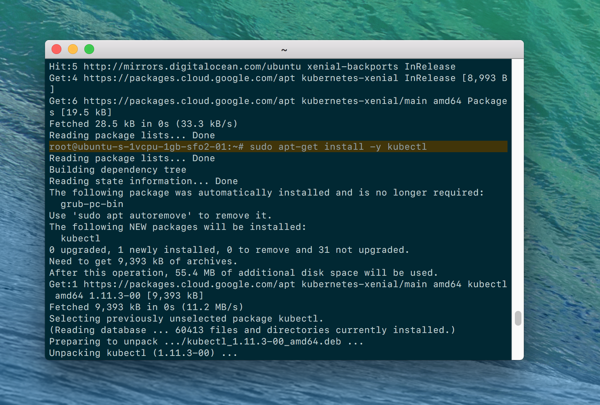
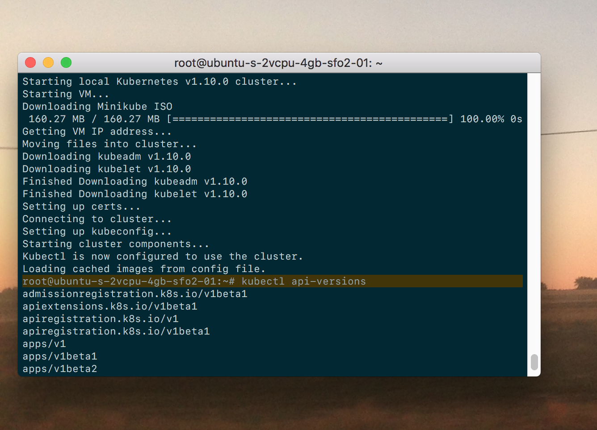

4 Steps to Install Kubernetes on Ubuntu 16.04 and 18.04
This is the fastest tutorial to install and run Kubernetes on Ubuntu.
With this guide you’ll be running Kubernetes on your Ubuntu machine. It’s the fastest set up for local development.
We’ll use Minikube, kubectl, and VirtualBox.
It works flawlessly for Ubuntu 16.04 (Xenial Xerus) and Ubuntu 18.04 (Bionic Beaver).
We used a DigitalOean virtual machine
to run Kubernetes. But it’ll work great for every Ubuntu installation.
1. Update Ubuntu dependencies
Update your system’s dependencies to get ready for the Kubernetes installation.
$ sudo apt-get update
$ sudo apt-get install -y apt-transport-https

2. Install VirtualBox on Ubuntu
Install VirtualBox to run virtual machines on your system.
$ sudo apt-get install -y virtualbox virtualbox-ext-pack

3. Install kubectl
Install kubectl, which you use to interact with the Kubernetes cluster.
$ curl -s https://packages.cloud.google.com/apt/doc/apt-key.gpg | sudo apt-key add -
$ sudo touch /etc/apt/sources.list.d/kubernetes.list
$ echo "deb http://apt.kubernetes.io/ kubernetes-xenial main" | sudo tee -a /etc/apt/sources.list.d/kubernetes.list
$ sudo apt-get update
$ sudo apt-get install -y kubectl

4. Install minikube
Download and install minikube, which runs a single node Kubernetes cluster on your machine.
$ curl -Lo minikube https://storage.googleapis.com/minikube/releases/v0.28.2/minikube-linux-amd64
$ chmod +x minikube && sudo mv minikube /usr/local/bin/
We’re Done!
Now start up Minikube and use kubectl to find what version of Kubernetes you’re running on Ubuntu.
$ minikube start
$ kubectl api-versions

What did we just install?
- VirtualBox runs virtual machines.
- Minikube is a Kubernetes-specific package that runs a local development Kubernetes cluster on VirtualBox.
kubectl is the command line tool that lets you interact with your Minikube Kubernetes cluster.